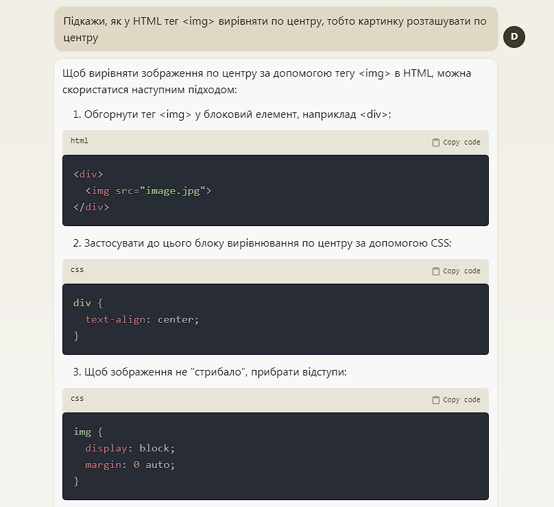

Найкращі ШІ сервіси
Штучний інтелект (ШІ) - це комп'ютерні системи, що можуть навчатися та вирішувати завдання. На нашому сайті ви знайдете список найкращих безкоштовних ШІ сервісів, які полегшать ваші повсякденні справи, від текстового редагування до створення презентацій. Але тут не буде банального ChatGPT або Bard...

Увага, список:
1. Claude (Chatbot)
Це ще один cпіврозмовник у всесвіті ШІ. Claude може узагальнювати, відповідати на питання, прогнозувати тенденції, порівнювати і зіставляти кілька документів та багато іншого. Сьогодні Клод представляє передній край штучного інтелекту на основі природної мови - погляд на більш схожі на людські розмовні здібності в машинах.
Зрештою, Клод може стати помічником, який зможе спілкуватися як справжній друг людини - з креативністю, емпатією та здоровим глуздом. Anthropic застосовуватиме виважений, етичний підхід, щоб зробити це бачення реальністю...
Інструкція використання тут
Приклад:
Схожі ШІ: ChatGPT, Google Bard, Bing AI...
2. Leonardo AI (Images)
Leonardo AI - це повнофункціональна платформа для створення зображень зі штучним інтелектом. Вона пропонує різні інструменти для створення дивовижних творів мистецтва та зображень всього за кілька кліків. Деякі з його основних застосувань у реальному житті наведені нижче:
- Розробники ігор можуть використовувати інструмент для створення персонажів і візуальних ефектів для своїх ігор.
- Дизайнери можуть використовувати інструмент, щоб перетворити свою уяву на витвори мистецтва.
- Художники можуть використовувати інструмент для створення послідовних творів мистецтва.
- Творці контенту можуть використовувати інструмент для створення приголомшливих персонажів і публікації їх на своїх веб-сайтах.
Крім того, творці можуть краще контролювати створення концепт-артів з єдиним стилем та ідеальним компонуванням пейзажів. У результаті виходить швидкий творчий процес з єдиним стилем, що поліпшує загальний результат.
Інструкція використання тут
Приклад:
Запит: A high detailed illustration of Ukraine fields with wheat landscape, Oleh Shupliak style, t-shirt design, sunrise, blue sky, in the style of Studio Ghibli, pastel tetradic colors, 3D vector art, cute and quirky, fantasy art, watercolor effect, bokeh, Adobe Illustrator, hand-drawn, digital painting, low-poly, soft lighting, bird's-eye view, isometric style, retro aesthetic, focused on the character, 4K resolution, photorealistic rendering, using Cinema 4D.
Схожі ШІ: Midjourney, DALL-E, Firefly...
3. Tome (Presentation)
Tome Al - це веб-сайт, який використовує можливості штучного інтелекту для створення переконливих презентацій. Використовуючи можливості ChatGPT і DALL-E 2, він легко поєднує текст і зображення для створення динамічних візуальних історій. За допомогою Tome Al користувачі можуть легко створювати цікаві презентації з будь-яким типом контенту і насолоджуватися безпроблемним та інтуїтивно зрозумілим процесом створення.
Платформа розроблена так, щоб вона була зручною та інтуїтивно зрозумілою, має простий інтерфейс, який полегшує початок роботи з інструментом. Його можна налаштувати, що дозволяє користувачам додавати таблиці, анімацію, зображення та інші функції до своїх презентацій.
Ось приклад презентацій
Інструкція використання тут
4. Runway (Video)
Runway AI Video Generator — це революційний інструмент, який використовує штучний інтелект для створення відео професійної якості всього за кілька кліків. За допомогою простого інтерфейсу перетягування користувачі можуть легко імпортувати відзнятий матеріал, додавати текстові накладки, музику та ефекти, а потім дозволити системі штучного інтелекту зробити все інше.
Однією з видатних особливостей Runway AI Video Generator є його здатність автоматично синхронізувати відео в ритмі музики. Це означає, що відео ідеально відповідатиме темпу та ритму звукової доріжки, створюючи бездоганний і професійно виглядаючий кінцевий продукт.
Приклад:
Інструкція використання тут